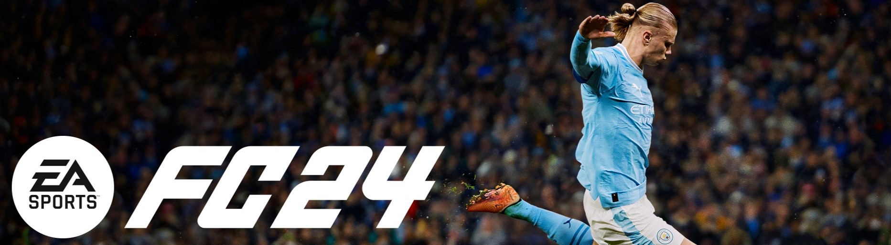

Single-player games are the heart of immersive storytelling and unforgettable experiences in gaming. From expansive story-driven RPGs that let you shape entire worlds to gripping survival challenges that test your wits and endurance, these games offer adventures tailored for solo exploration. Whether you're uncovering hidden treasures in richly detailed open worlds, solving intricate puzzles, or enjoying the artistic brilliance of indie gems, single-player games cater to every type of gamer. They provide a perfect escape, allowing you to dive into compelling narratives, develop skills, and engage with innovative gameplay at your own pace. Explore the best single-player games on PC the world waiting just for you.
Some of the best PC games of all time are single player experiences with carefully crafted stories, and you'll find the cream of the crop in this list, including some of the best story games and the best RPG games. We've even thrown in a couple of curveballs, too, for those players who prize slick mechanics over a grand narrative. Whatever you're looking for in a single-player experience, your next solo adventure is just a hop, skip, and a scroll away.
Red Dead Redemption 2
-
Price: LKR 18,000
Release Date: October 26, 2018
Platforms: PlayStation 4, Xbox One, Google Stadia, Microsoft WindowsRed Dead Redemption 2 is a Western-themed action-adventure game. Played from a first or third-person perspective, the game is set in an open-world environment featuring a fictionalized version of the United States in 1899. For most of the game, the player controls outlaw Arthur Morgan, a member of the Van der Linde gang, as he completes missions linear scenarios with set objectives to progress the story. -
The Witcher 3: Wild Hunt

Price: LKR 12,000
Release Date: May 18, 2015
Platforms: PlayStation 5, Nintendo Switch, PlayStation 4, Xbox One, Xbox Series X and Series S, GeForce Now, Microsoft WindowsThe Witcher 3: Wild Hunt is an action role-playing game with a third-person perspective. Players control Geralt of Rivia, a monster slayer known as a Witcher.Players occasionally control Ciri, Geralt's adoptive daughter who can teleport short distances. -
Assassin's Creed Mirage
Price: LKR 15,000
Release Date: October 5, 2023
Platforms: PlayStation 5, Nintendo Switch, PlayStation 4, Xbox One, Xbox Series X and Series S, Microsoft WindowsAssassin's Creed Mirage is a 2023 action-adventure game developed by Ubisoft Bordeaux and published by Ubisoft. Set in 9th-century Baghdad during the Islamic Golden Age in particular during the Anarchy at Samarra the story follows Basim Ibn Ishaq (a character first introduced in Valhalla), a street thief who joins the Hidden Ones to fight for peace and liberty, against the Order of the Ancients, who desire peace through control. -
Elden Ring
Price: LKR 18,000
Release Date: February 25, 2022
Platforms: PlayStation 5, PlayStation 4, Xbox Series X and Series S, Xbox One, Microsoft WindowsElden Ring is an action role-playing game set in third-person perspective. It includes elements that are similar to those in other FromSoftware-developed games, such as the Dark Souls series, Bloodborne, and Sekiro: Shadows Die Twice. The game is set in an open world; players can freely explore the Lands Between and its six main areas, which include Limgrave—an area of grassy plains and ancient ruins—and Caelid, a reddish wasteland home to undead monsters. -
Ghost of Tsushima
Price: LKR 18,000
Release Date: July 17, 2020
Platforms: PlayStation 5, PlayStation 4, Microsoft WindowsGhost of Tsushima is an action-adventure video game played from a third-person perspective. The player has a variety of gameplay options to reach objectives they are given. They can engage in a "standoff", a direct confrontation with enemies using their katana, which can result in a series of fatal strikes against a number of different enemies. In combat, Jin can use different fighting stances to defeat specific types of enemies. -
Resident Evil 4 Remake
Price: LKR 12,000
Release Date: March 23, 2023
Platforms: PlayStation 5, PlayStation 4, Xbox Series X and Series S, Microsoft Windows, macOS, iOS, Mac operating systemsResident Evil 4 is a remake of the 2005 game Resident Evil 4. It features "over-the-shoulder" third-person shooter gameplay similar to the original, while drawing other design aspects from the remakes of Resident Evil 2 (2019) and Resident Evil 3 (2020). Resident Evil 4 features redesigned visuals, designed to create a tenser atmosphere, along with new character designs and backgrounds. -
Alan Wake 2
Price: LKR 21,000
Release Date: October 27, 2023
Platforms: PlayStation 5, Xbox Series X and Series S, GeForce Now, Microsoft WindowsCompared to the original Alan Wake, which is an action-adventure game with horror themes, Alan Wake 2 is a survival horror game, although it is still played from a third-person perspective. Players play as Alan Wake or Saga Anderson in two separate single-player stories, which can be played in any order the player chooses, although the opening and ending sequences of the game are linear. -

EA Sports FC 24
Price: LKR 13,000
Release Date: September 22, 2023
Platforms: PlayStation 5, PlayStation 4, Microsoft WindowsEA Sports FC 24 is an association football-themed simulation video game developed by EA Vancouver and EA Romania and published by EA Sports. It is the inaugural installment in the EA Sports FC series, succeeding the FIFA video game series after Electronic Arts's partnership with FIFA concluded with FIFA 23. -
Hogwarts Legacy
Price: LKR 18,000
Release Date: February 10, 2023
Platforms: PlayStation 5, Nintendo Switch, PlayStation 4, Xbox One, Xbox Series X and Series S, Microsoft WindowsHogwarts Legacy is a 2023 action role-playing game developed by Avalanche Software and published by Warner Bros. Games under its Portkey Games label. It is part of the Wizarding World franchise, taking place a century prior to the Harry Potter novels. -
Marvel's Spider-Man 2
Price: LKR 21,000
Release Date: October 20, 2023
Platforms: PlayStation 5, Microsoft WindowsMarvel's Spider-Man 2 is an action-adventure single-player video game played from a third-person perspective. As with the first game Peter Parker and Miles Morales are the two main characters, with Mary Jane and Venom playable in certain missions, becoming individually playable in accordance with the story as they traverse an open world New York City and fight enemies.